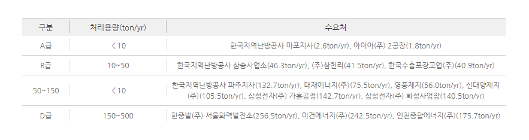
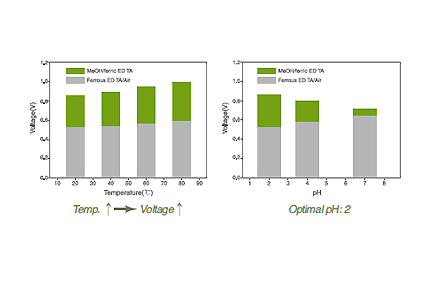

Report by Subjects
Report by Subjects
KAIST RESEARCH ACHIEVEMENTS
Development of Dual fuel cell
to capture and collect
pure NOx from flue gases
Department of Civil and Environmental Engineering
Jong-In Han
Summary
The ultimate goal of this research is to commercialize the two types of prototypes: fuel cell and electrolysis-, able to selectively capture NOx from the exhaust gas emitted from the power plants and petroleum refineries, through its optimization on the facilities' conditions of exhaust rate, concentration, and process speed. On the lab-scale experiment, fuel cell type has NOx removal rate as 1 ton per year. Through its 4 stepwise scale ups, the research team aims to increase the removal rate as well as substitute the conventional Selective Catalytic Reduction(SCR) in NOx producing facilities. With its advantage of room-temperature-operational characteristic, as well as good efficiency even in acidic condition, NOx capture system may be implemented on exhaust gas containing CO2.
R&D Report
These days, an enormous amount of Nitrogen-oxide(NOx) regularly occurs from the process of vehicle engine combustion and from many facilities using fossil fuel such as power plants, industrial boilers, incineration plants, and so on. The occurrence of NOx has noxious effects not only on human body but also on atmospheric pollution: acid rain, destruction of the ozone layer, photochemical smog. So far, several methods, for instance, SCR(Selective catalytic reduction), application of electron beam, and pulse corona discharges, have been studied and developed in order to solve this matter.


Fig 2. Generate Electric potential according to
temperature/pH difference in fuel cell system
 Fig 3. Electric potential and Generation rate of intermediate in fuel cell system
Fig 3. Electric potential and Generation rate of intermediate in fuel cell system
In addition, the process of BioDeNox(eliminating NOx by using microbe) is recently developed and receives attention. Yet, while practicing those methods, there require mass consumption of energy and funds. Moreover, we are facing difficulties with the processing speed of BioDeNox(currently in developing). If we can derive high-value materials such as nitric acid or ammonia fertilizer from NOx, we can exceptionally secure the economic feasibility. Ammonia fertilizer can be produced by combination of ammonia and nitric acid(can be produced by melting NOx in the water). In the industrial exhaust gas, there exists not just NOx, but other gases as well, such as Sox, CO, CO2. Hence, we use the pure NOx, derived from the mixture of nitrogen and natural gas only under the existence of metal catalyst. This technique selectively removes the NOx from the exhaust gas in a fuel cell system that utilizes Fe(II)EDTA(Ferrous-EDTA) to adsorb and capture NOx, while using the electrochemical-oxidation-reduction potential differences between Ferrous-EDTA and Ferric-EDTA(Fe(III)EDTA) to produce electricity from fuel cell system.

With its principle based on fuel cell, NOx capture technique has its marked advantages over conventional SCR in that the technique is 1) operational in room temperature, 2) less noble metal catalyst required, 3) additional production of electricity, and 4) potential production of nitric acid with captured NOx. In current lab-scale experiment proved that it has efficiency rate of more than 99% removal rate, able to process 1 ton NOx per year. Since pure NOx is captured throughout the system, ingredients for nitric acids as well as nitric fertilizer are provided. In addition, the research team is now working extensively on utilizing the NOx captured, such as registering patent for production of high-value product in bioethanol integrated production system. University-Industry cooperation research with Hanyang Semitech. Co. is also being done at the moment.
Research results
ㆍTechnology transfer(in discussion): HANYANG SEMITECH CO., LTD.
ㆍPatent registration: 2
ㆍJournal(SCI) paper: 2
ㆍDomestic media report: Etnews(2012.11.01.) "NOx collection from flue gases and electricity generation"
Reference material
ㆍRelated Paper: Kim, K., Kim, D.-Y., Lee, K., and Han, J.-I.(2013). "Electricity generation from iron EDTA-based liquid redox sulfur recovery process with enhanced stability of EDTA."Energy Conversion & Management. 76: 342-346.
ㆍKim, D.-Y., and Han, J.-I.(2013). "An innovative dual fuel cell to capture and correct pure NOx from flue gases."Journal of Applied Electrochemistry. 43(10): 1011-1016 Research finance